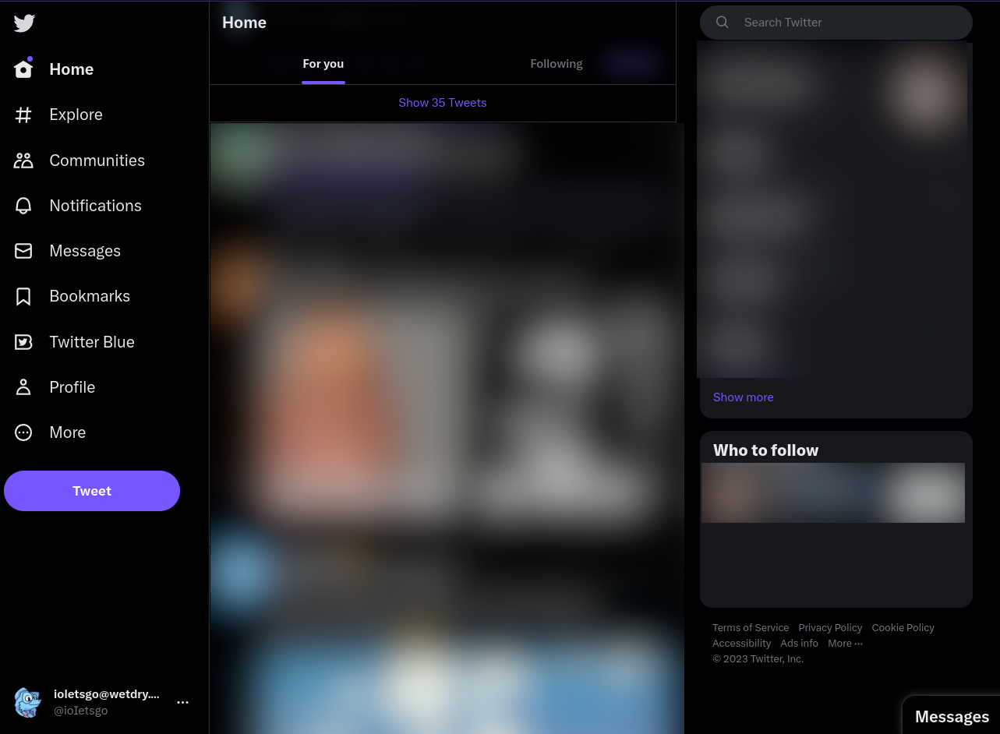
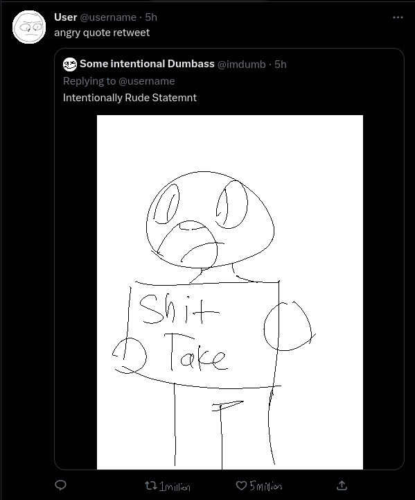

Social Media, Morality, How To Become Famous, and Why You DON'T Want To Be Famous
I used to be pretty large on social media. Many might say I had a "fall" from grace, when in reality it was all intentional. Facts are, being (in)famous can be a very tolling thing on a person, for numerous reasons.This will largely be talking about Twitter, my experiences with the algorithm, how I gained it, and how my morals ultimately stagnated my growth on Twitter. This guide (and warning) could be attempted on other platforms, however I only see limited success on most platforms.
(except Facebook for reasons I'll go into later).

What it takes to be popular
I'm putting this section before discussions on the HOW as a warning. In order to ensure becoming famous online, you have to, in layman's terms, be a fucking vain sociopath. Following this will likely lead to a lack of friends, total isolation, and the entirety of Twitter treating you like another Kira or Uxie (which, to be honest, you're gonna be). This is a warning, this WILL fuck with your mental state, and even if you don't realize it, this is ultimately the line of thinking you'd be following if you truly hope for glamor.
What is an "Algorithm"?
An algorithm, in the Social Media sense, is a dynamically evolving system, typically using Artificial Intelligence, designed to keep users on the platform that the algorithm was designed for. The end goal for most online algorithms is to keep users on ad-filled platforms. This is where the popular mantra of "If it's free, YOU'RE the product" comes from. You are being sold products on a near daily basis on these platforms.
Popular examples of effective algorithms are the Youtube, TikTok, and Twitter algorithms. All three of these use the criteria of "Engagement" to not only wager the quality of content, but to sort individuals into certain niches.
How do we farm engagement?
The twitter algorithm uses the criteria of Engagement. Which is measured in views, duration of the views, and how often someone engages in that post through criteria like Comments, Retweets, and Likes. In layman's terms, if the content is interesting, it will "blow up". This isn't necessarily a bad criteria for a social media site to work... On paper.In execution, it's far more complicated.

Human beings are negative, like REALLY fucking negative.
There is literally a term for how much we fixate on the negative aspects of something, Negativity Bias. As a short summary, we as human beings fixate on negative aspects, even if it's in equilibrium with something positive. If you found a hundred dollar bill on a sidewalk, but you have a rock in your shoe, you're far more likely to think about that mild annoyance in your shoe compared to the 100 dollars you just picked up.
As you can probably see where this is going, people focus a lot more on negative stuff. Like, a LOT more. And THIS is ultimately your key to success. Negativity.
Negativity is Key
Social media sites LOVE negativity, largely because it keeps engagement up. Reminder, if you want success, you do NOT produce content for people. You produce content for the algorithm. How you should see it, people aren't and shouldn't be treated like human beings. They are stepping stones for your (seemingly) inevitable success. You have to actively seek out negative content, be it Bait or not. Speaking about bait...
Bait And Fame
Bait is like a prepackaged engagement farm. In layman's terms it's individuals acting intentionally egregious, typically through a bad opinion, rage-inducing content, or through intentional instigation.